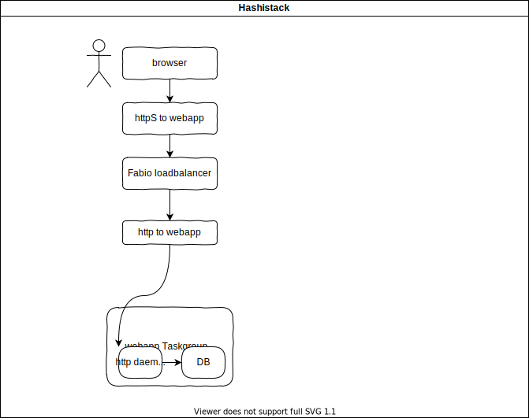
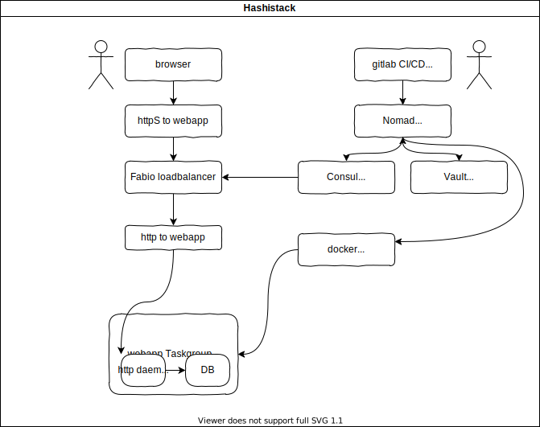
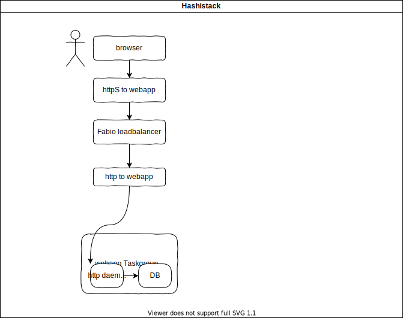
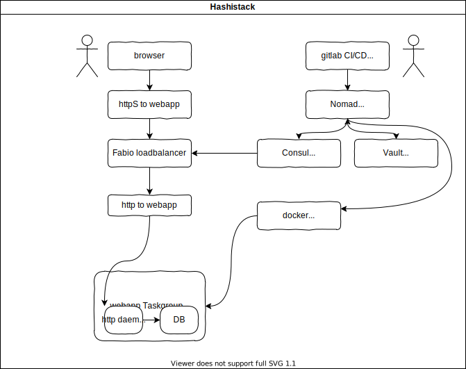

---
Simple CI/CD with GitLab + Nomad
Tracey Jaquith
---
@tracey_pooh
Internet Archive
TV Architect
· video/audio · devops · javascript ·
---
 ---
## overview

---
## overview

---
## tl;dr
`.gitlab-ci.yml`
```yaml
include:
- remote: 'https://git.archive.org/www/nomad/-/raw/master/.gitlab-ci.yml'
```
---
## tl;dr
{GitLab repository}
---
## overview

---
## overview

---
## tl;dr
`.gitlab-ci.yml`
```yaml
include:
- remote: 'https://git.archive.org/www/nomad/-/raw/master/.gitlab-ci.yml'
```
---
## tl;dr
{GitLab repository}
[Settings] [CI/CD] [Variables]
`NOMAD_ADDR` `https://pod.archive.org:4646`
`NOMAD_TOKEN` `133t-z6rf-1234-1243bcd35199187`
---
## template
[project.nomad](https://git.archive.org/www/nomad/-/raw/master/project.nomad)
- generic template
- leverages: [Levant](https://github.com/jrasell/levant)
- example using levant + GitLab CI/CD Auto DevOps variables:
```
job SOMETHING {
group SOMETHING {
task SOMETHING {
driver = "docker"
config {
image = "[[.CI_REGISTRY_IMAGE]]/[[.CI_COMMIT_REF_SLUG]]:[[.CI_COMMIT_SHA]]"
}
}
}
}
...
```
---
## project.nomad
[https://git.archive.org/www/nomad/project.nomad](https://git.archive.org/www/nomad/-/raw/master/project.nomad)
```
job "[[.NOMAD__SLUG]]" {
datacenters = ["dc1"]
migrate {
max_parallel = 3
health_check = "checks"
min_healthy_time = "15s"
healthy_deadline = "5m"
}
group "[[.NOMAD__SLUG]]" {
count = 1
update {
max_parallel = 1
min_healthy_time = "30s"
healthy_deadline = "5m"
progress_deadline = "10m"
auto_revert = true
}
task "[[.NOMAD__SLUG]]" {
driver = "docker"
config {
image = "[[.CI_REGISTRY_IMAGE]]/[[.CI_COMMIT_REF_SLUG]]:[[.CI_COMMIT_SHA]]"
port_map {
# when you see "http" later below, it's this port
http = [[ or (.NOMAD__PORT) 5000 ]]
[[ if .NOMAD__PORT2 ]] [[.NOMAD__PORT2_NAME]] = [[.NOMAD__PORT2]] [[ end ]]
[[ if .NOMAD__PORT3 ]] [[.NOMAD__PORT3_NAME]] = [[.NOMAD__PORT3]] [[ end ]]
}
auth {
# GitLab docker login user/pass are pretty unstable. If admin has set `..R2..` keys in
# the group [Settings] [CI/CD] [Variables] - then use deploy token-based alternatives.
server_address = "[[.CI_REGISTRY]]"
username = "[[ or (.CI_R2_USER) .CI_REGISTRY_USER ]]"
password = "[[ or (.CI_R2_PASS) .CI_REGISTRY_PASSWORD ]]"
}
}
resources {
network {
port "http" {}
[[ if .NOMAD__PORT2_NAME ]] port "[[.NOMAD__PORT2_NAME]]" {} [[ end ]]
[[ if .NOMAD__PORT3_NAME ]] port "[[.NOMAD__PORT3_NAME]]" {} [[ end ]]
}
memory = [[ or (.NOMAD__MEMORY) 300 ]] # defaults to 300MB
cpu = [[ or (.NOMAD__CPU) 100 ]] # defaults to 100 MHz
}
# The "service" stanza instructs Nomad to register this task as a service
# in the service discovery engine, which is currently Consul. This will
# make the service addressable after Nomad has placed it on a host and
# port.
#
# For more information and examples on the "service" stanza, please see
# the online documentation at:
#
# https://www.nomadproject.io/docs/job-specification/service.html
#
service {
name = "[[.NOMAD__SLUG]]"
tags = [
"urlprefix-[[.NOMAD__HOSTNAME]]:443/",
# automatically redirect any http traffic to https
"urlprefix-[[.NOMAD__HOSTNAME]]:80/ redirect=308,https://[[.NOMAD__HOSTNAME]]/"
]
port = "http"
check {
name = "alive"
# repo can set this to "tcp" (defaults to "http") - can help for debugging 1st deploy..
type = "[[ or (.NOMAD__CHECK_PROTOCOL) "http" ]]"
port = "http"
path = "/"
interval = "10s"
timeout = "2s"
[[ if .NOMAD__DEBUG ]]
# give container (eg: having issues) 1h to stay up for debugging before 1st health check
check_restart {
grace = "3600s"
}
[[ end ]]
}
}
[[ if .NOMAD__PORT2 ]]
service {
name = "[[.NOMAD__SLUG]]-[[.NOMAD__PORT2_NAME]]"
tags = ["urlprefix-[[.NOMAD__HOSTNAME]]:[[.NOMAD__PORT2]]/"]
port = "[[.NOMAD__PORT2_NAME]]"
check {
name = "alive"
type = "[[ or (.NOMAD__CHECK_PROTOCOL) "http" ]]"
port = "http"
path = "/"
interval = "10s"
timeout = "2s"
}
}
[[ end ]]
[[ if .NOMAD__PORT3 ]]
service {
name = "[[.NOMAD__SLUG]]-[[.NOMAD__PORT3_NAME]]"
tags = ["urlprefix-[[.NOMAD__HOSTNAME]]:[[.NOMAD__PORT3]]/"]
port = "[[.NOMAD__PORT3_NAME]]"
check {
name = "alive"
type = "[[ or (.NOMAD__CHECK_PROTOCOL) "http" ]]"
port = "http"
path = "/"
interval = "10s"
timeout = "2s"
}
}
[[ end ]]
[[ if .NOMAD__VAULT ]]
# Secrets - using Vault
# To enable usage, set CI environment variable 'NOMAD__VAULT' in your '.gitlab-ci.yml', eg:
# variables:
# NOMAD__VAULT: 'true'
#
# You will _also_ have to enter data into your vault _first_ separately.
# Some commnd line examples on how to write secrets into the vault.
# Substitute "my-service" below for the name of your service (eg: "www-nomad")
/*
SVC=my-service
export VAULT_ADDR=$(echo $NOMAD_ADDR |sed s/4646/8200/)
export VAULT_TOKEN=$(sudo grep token /etc/nomad/server.hcl |cut -f2- -d= |tr -d '" ')
echo 'path "kv/data/'$SVC'" { capabilities = ["read"] }' | vault policy write read-$SVC -
vault policy read read-$SVC
vault kv put kv/$SVC key1=val1
vault kv patch kv/$SVC key2=val2
vault kv get --field=key1 kv/$SVC
vault kv get -output-curl-string --field=key2 kv/$SVC
*/
# https://www.vaultproject.io/docs/secrets/kv/kv-v2#acl-rules
# https://www.linode.com/docs/applications/configuration-management/use-hashicorp-vault-for-secret-management/
#
# Writes to '/secrets/file.env' inside container
# Sets $NOMAP environment variable in containers (a JSON-encoded hashmap of your keys/vals)
vault { policies = [ "read-[[.NOMAD__SLUG]]" ] }
template {
data = "NOMAP='{{with secret \"kv/data/[[.NOMAD__SLUG]]\"}}{{.Data.data | toJSON}}{{end}}'"
destination = "secrets/file.env"
env = true
}
[[ end ]]
[[ if .NOMAD__HOME_RO ]]
volume_mount {
volume = "home-ro"
destination = "/home"
read_only = true
}
[[ end]]
[[ if .NOMAD__HOME_RW ]]
volume_mount {
volume = "home-rw"
destination = "/home"
read_only = false
}
[[ end ]]
[[ if .NOMAD__PV ]]
volume_mount {
volume = "[[.NOMAD__PV]]"
destination = "[[ or (.NOMAD__PV_DEST) "/pv" ]]"
read_only = false
}
[[ end ]]
[[ if .NOMAD__PV_DB ]]
volume_mount {
volume = "[[.NOMAD__PV_DB]]"
destination = "[[ or (.NOMAD__PV_DB_DEST) "/pv" ]]"
read_only = false
}
[[ end ]]
} # end task
[[ if .NOMAD__HOME_RO ]]
volume "home-ro" {
type = "host"
read_only = true
source = "home-ro"
}
[[ end ]]
[[ if .NOMAD__HOME_RW ]]
volume "home-rw" {
type = "host"
read_only = false
source = "home-rw"
}
[[ end ]]
[[ if .NOMAD__PV ]]
volume "[[.NOMAD__PV]]" {
type = "host"
read_only = false
source = "[[.NOMAD__PV]]"
}
[[ end ]]
[[ if .NOMAD__PV_DB ]]
volume "[[.NOMAD__PV_DB]]" {
type = "host"
read_only = false
source = "[[.NOMAD__PV_DB]]"
}
[[ end ]]
[[ if .NOMAD__PG ]]
# Optional add-on postgres DB. @see README.md for more details to enable.
task "[[.NOMAD__SLUG]]-db" {
driver = "docker"
config {
image = "docker.io/bitnami/postgresql:11.7.0-debian-10-r9"
port_map {
db = 5432
}
}
resources {
network {
port "db" {
static = 5432
}
}
}
vault { policies = [ "read-[[.NOMAD__SLUG]]" ] }
template {
data = "POSTGRESQL_PASSWORD={{with secret \"kv/data/[[.NOMAD__SLUG]]\"}}{{.Data.data.DB_PW | toJSON}}{{end}}"
destination = "secrets/file.env"
env = true
}
service {
name = "[[.NOMAD__SLUG]]-db"
port = "db"
check {
expose = true
type = "tcp"
interval = "2s"
timeout = "2s"
}
check {
# This posts containers bridge IP address (starting with "172.") into
# an expected file that other docker container can reach this
# DB docker container with.
type = "script"
name = "setup"
command = "/bin/sh"
args = ["-c", "hostname -i |tee /alloc/data/[[.NOMAD__SLUG]]-db.ip"]
interval = "1h"
timeout = "10s"
}
check {
type = "script"
name = "db-ready"
command = "/usr/bin/pg_isready"
args = ["-Upostgres", "-h", "127.0.0.1", "-p", "5432"]
interval = "10s"
timeout = "10s"
}
} # end service
volume_mount {
volume = "[[.NOMAD__PV_DB]]"
destination = "[[ or (.NOMAD__PV_DB_DEST) "/pv" ]]"
read_only = false
}
} # end task
[[ end ]]
[[ if .NOMAD__MYSQL ]]
# Optional add-on mysql/maria DB. @see README.md for more details to enable.
# https://github.com/bitnami/bitnami-docker-wordpress
task "[[.NOMAD__SLUG]]-db" {
driver = "docker"
config {
image = "bitnami/mariadb" # :10.3-debian-10
port_map {
db = 3306
}
}
resources {
network {
port "db" {
static = 3306
}
}
}
vault { policies = [ "read-[[.NOMAD__SLUG]]" ] }
template {
data = <